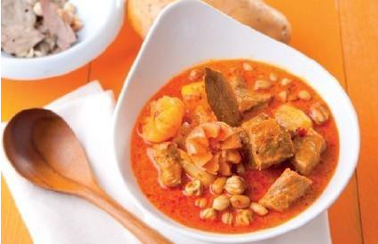
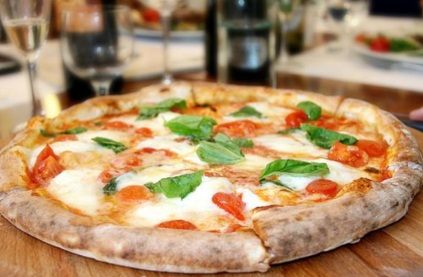
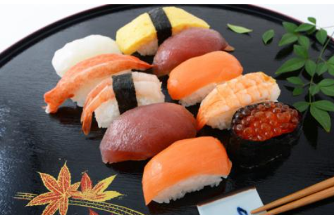

所有信息|news
-
安排上了！你想要的地道港味美食
香港不仅是金融、经济、法治等领域的高地更有着“美食天堂”的美誉,比如像时尚兰桂坊 港味铜锣湾 中环苏豪区等等 饮食文化横贯中西...
美食食物吃得
-
展现欧洲食品和饮料的多彩世界
欧盟 "源自欧洲的色彩 "活动旨在向中国大陆地区全面推广欧盟的各类安全、优质的农产品。6月2日于西安举办了"欧盟专业餐饮西安品鉴会...
美食农产品饮料
-

香港人均寿命凭啥居全球第一？观察他们饮食，答案一目了然
从古至今，长寿健康一直是人们追求的终极目标，长久以来，人们都以为全球人均寿命最高的国家是日本，然而根据最新研究数据表明，香港人平均寿命达到了83.9岁，超2岁的日本，成为了世界第一.
美食全球第一欧洲
-
最美遇见你!在美食的世界里邂逅一段浪漫情缘
5月22日,由武汉广播电视台(集团)、武汉联投置业有限公司共同打造的全媒体交友真人秀节目《最美遇见你》,为单身男女量身打造了一场精彩的美食情缘交友派对,们大呼“过瘾”。...
美食武汉浪漫情缘
-
世界上公认好吃的美食，中国又上榜了，最后一种大街上都卖
界之大，无奇不有，世界那么大我想去看看，去看看其他国家的美食，现在我们对于美食都是无法抗拒的，现在只要是是能吃的，没有毒的我们就都会接受的去尝试吃，但是现在的美食不局限于自己的国家了...
美食农产品饮料
-
地处世界一线城市黄金地段的美食街，人均几十就能吃完吃好整条街
对于吃货来说，美食就是治愈心灵的神器。没有什么烦恼是一顿美食解决不了的，如果有那就来两顿。其实广大吃货基本都知道，很多物美价廉的道地美食，往往不是在所谓的高档餐厅，而是在一些看似不起眼的市井小巷之中。.9岁，超2岁的日本，成为了世界第一.
美食全球第一欧洲
-
各国饮食不一样！而全球最好饮食竟然是这样
韩国的食疗法。韩国人利用廉价的普通食品作为饮食疗法，这些食品是：（1）海带：它是韩国人最常食用的食品之一。海带含热量较低，胶质和矿物质较高，易消化吸收，抗老化，多吃不会发胖，是理想的女性健康食品。”。...
美食各国饮食浪漫情缘
热们点击资讯
热们美食
|

泰国马沙文咖喱 |

那不勒斯比萨 |

墨西哥巧克力 |

日本寿司 |

北京烤鸭 |

德国汉堡 |